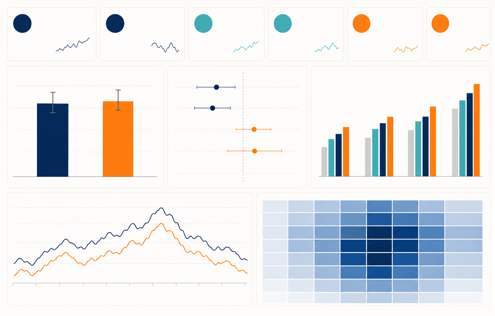
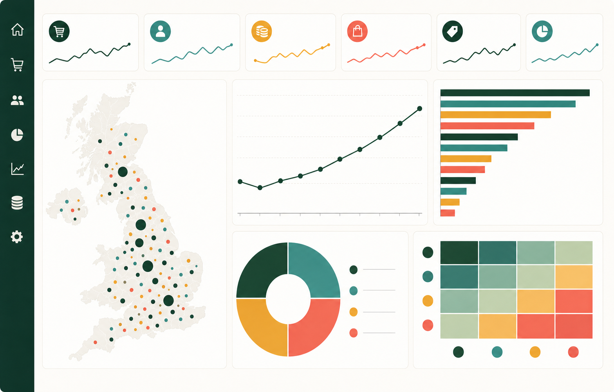
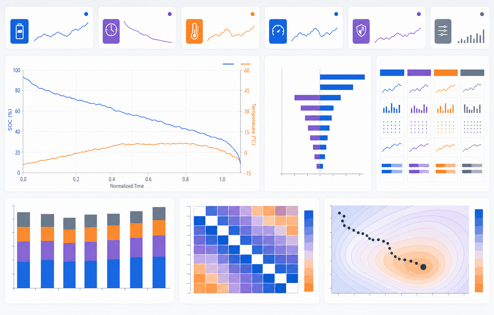

01 · EXPERIMENTN=588,101 · LIFT +0.769pp2026.05 · A/B TESTING
广告投放 A/B 实验
与用户转化分析
PythonMySQLZ-TestTableau
588,101 名用户，验证新广告相对 PSA 的转化增量，并拆解曝光频次与投放时段。
打开完整案例 ↗DATA ANALYST · PORTFOLIO 2026
三项完整案例，覆盖实验分析、客户价值与科学建模。从原始数据质量、指标体系、Python / MySQL 实现，到可视化证据和行动建议。
SELECTED PROJECTS
点击项目进入独立案例页；流程节点、图表视图和代码入口均可交互查看。

01 · EXPERIMENTN=588,101 · LIFT +0.769pp2026.05 · A/B TESTING
588,101 名用户，验证新广告相对 PSA 的转化增量，并拆解曝光频次与投放时段。
打开完整案例 ↗
02 · CUSTOMER VALUE£8.887M · 4,338 CUSTOMERS2026.05 · E-COMMERCE
541,909 条明细，重建订单与客户分析层，识别市场、旺季和高价值客群。
打开完整案例 ↗
03 · SCIENTIFIC MODELMODEL RUN · TTE 4.26h → 10.03h2025.12—2026.02 · MODELING
用 SOC—温度耦合方程解释功耗与热反馈，并在性能、安全约束下优化 TTE。
打开完整案例 ↗ANALYTICAL SYSTEM